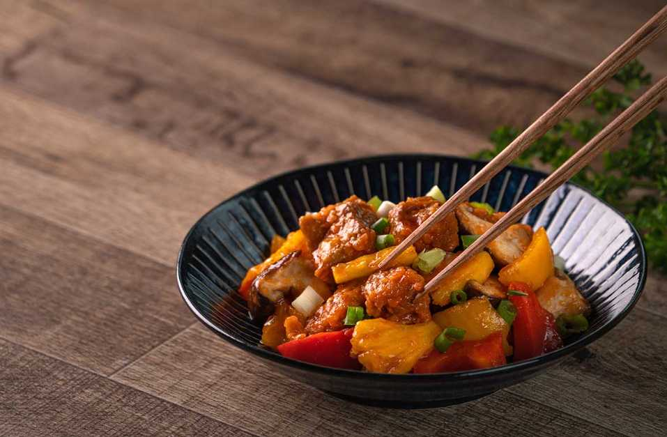

Sweet and Sour Pork
Description
Sweet and sour pork is a staple dish enjoyed in Western China that is also often found in Chinese restaurants around the world. This dish is constructed around its main ingredient, deep-fried pork, which is stir-fried in a sweet and sour sauce, typically made of sugar, ketchup, hite vinegar, and soy sauce. Additional ingredients including onions pineapple, and green pepper also work to complete this signature meal, leading it to become one of the most popular dishes in China.
Difficulty: Intermediate
Time to Prepare: 45 minutes
Ingredients
- 1 lb pork loin, cut into bite-sized pieces
- 1/2 cup cornstarch
- 1/4 cup all-purpose flour
- 2 eggs, beaten
- 1/4 cup vegetable oil
- 1 bell pepper, cut into chunks
- 1 onion, cut into chunks
- 1 cup pineapple chunks
- 1/2 cup ketchup
- 1/4 cup rice vinegar
- 2 tablespoons soy sauce
- 1/4 cup brown sugar
- 1 tablespoon cornstarch mixed with 2 tablespoons water (for thickening sauce)
Steps:
- Coat pork pieces with cornstarch and flour mixture, then dip in beaten eggs.
- Heat oil in a skillet over medium heat and fry pork until golden brown. Remove from skillet and set aside.
- In the same skillet, sauté bell pepper and onion until tender.
- Add pineapple chunks, ketchup, rice vinegar, soy sauce, and brown sugar to the skillet. Stir to combine.
- Bring sauce to a simmer, then add cornstarch-water mixture to thicken.
- Return fried pork to the skillet and toss to coat with sauce.
- Serve hot over steamed rice.